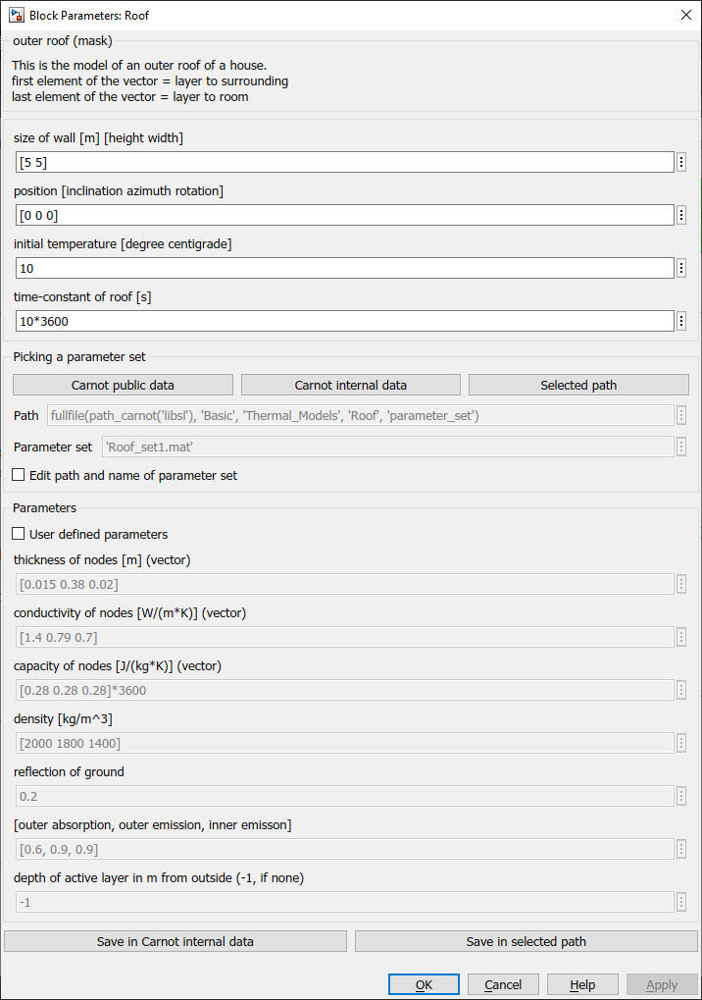

Roof
Path: CARNOT/Basic/Thermal_Models
Purpose:
Model of a ceiling and roof.
Description:
The inner heat transfer is the same as for a ceiling. The outer heat transfer
to ambient is modeled in two parts:
Dynamic, convective heat transfer coefficients according to (Glück 2007).
The roof itself is modeled by the Beuken model.
For the further description see wall_out
Input:
| WDB | : | Weather Data Bus |
| power per node | : | thermal power to the active node(s) in W |
| AIB | : | Air Infiltration Bus (old name: AIV) see also CreateAIB |
Output:
| [S] | : | Sources-Bus of the building model |
Parameters and Dialog Box:

You may directly choose predefined parameter sets. For details see chapter 2.2.1 Choosing parameter sets for configurated models
Examples:
Open the example explorer from the Matlab command window
ExampleBrowser
or load the examples via the CARNOT library.
Literature:
Glück Bernd: Wärmeübergangskoeffizienten an thermisch aktiven Bauteiloberflächen
und der Übergang zu Basiskennlinien für die Wärmestromdichte;
gi Gesundheits-Ingenieur; 128. Jahrgang 2007, Heft 1, Seiten 1-10
Characteristics:
| Direct Feedthrough | : | No |
| Sample Time | : | Inherited from driving block |
| Vectorized | : | No |